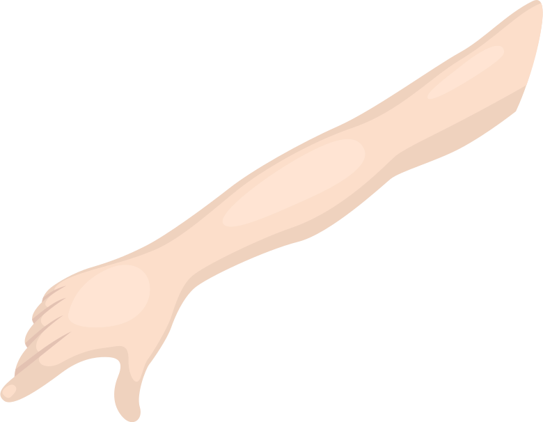

Physical Therapy Training System
My Role: User Experience Designer, Visual Designer
Duration: 3 Months

The project comes from the study by the PT Department of UofM. There are several problems exsiting in current PT trainings:
Inspired by the mataphor of mirror, we tried to use sensors to measure the current gesture of trainers, reflect and compare them with the demo, and provide timely feedbacks to the trainers.
As a start, we created a device to track the basic gestures of the trainer, use Shoulder75 exercise as an example. The device is made up of Lilypad, accelerometers, LED, and Buzzer. The Lilypad can get the 3D location information from the accelerometers, and send signals to the computer to check if the gesture is on the right track compares to our demos. The LED and Buzzer receive the feedback from the computer and make signals to the user. The device is easy to make, without much cost; while provide multi-signals for users to track their gestures, and is in portable size.